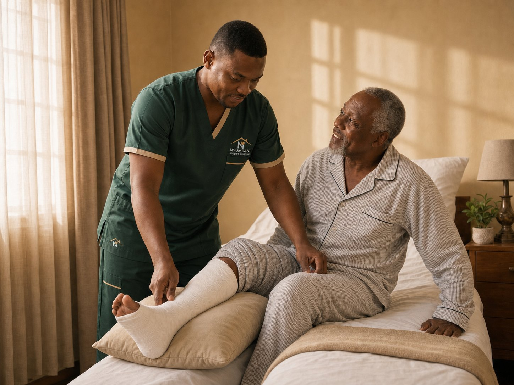

Hospital-quality care, in the comfort of your home.
From elderly companionship and post-discharge recovery to medical equipment delivered and set up in your home — Nyumbani Support Solutions brings dependable, dignified care to families across Kenya.

A trusted in-home care partner backed by
Seven focused services, built around what families really need
From the day after discharge through long-term elderly support, our care services are designed to keep recovery safe and dignity intact — without families carrying it all alone.
Elderly Care at Home
Daily companionship, bathing, dressing, mobility, meals, and medication reminders — delivered with patience and dignity.
Learn more →Post-Discharge Recovery
Structured support after surgery, stroke, fractures, or hospital admission — nurse oversight, medication reconciliation, and safer recovery.
Learn more →Skilled Nursing & Oversight
NCK-registered nurses for assessments, vitals, wound care, medication coordination, and escalation when conditions change.
Learn more →Dementia & Frailty Support
Gentle, dignity-centered support for seniors living with memory decline, frailty, fall risk, or reduced independence at home.
Learn more →Child & Family Autism Support
In-home autism support across the lifespan — routines, sensory and behavioural support, family respite, and therapy coordination.
Learn more →Palliative & Comfort Care
Compassionate care focused on comfort, pain relief, and dignity — for clients facing serious or life-limiting illness.
Learn more →Equipment Rental Bundles
Hospital beds, wheelchairs, walkers, oxygen concentrators, commodes, and more — delivered, set up, and explained to your family.
Learn more →From hospital discharge to a steady, safe home.
Most in-home care is reactive. Ours is structured. We make the journey from hospital to home transparent — so families know what's happening, what to monitor, and what to expect.
- Before discharge: review notes, medications, and equipment needs
- Day one home: nurse assessment, vitals baseline, safety review, equipment setup
- Recovery phase: scheduled visits, nurse follow-ups, family updates
- Stable phase: right-sized care that adapts as recovery progresses

Care your family can actually feel
Built on four pillars that families across Kenya can trust — every visit, every shift, every conversation.
Compassionate Care
Trained caregivers who listen, take their time, and treat your loved one like their own.
Support at Home
Clinical-quality care delivered where healing happens best — in familiar, comfortable surroundings.
Empowering People
We teach as we care — so families feel confident, not dependent, when our visits end.
Trust & Reliability
Background-checked, NCK-credentialed, and consistent — the same trusted faces, every visit.
The people behind the uniform
NCK-registered nurses and trained caregivers who arrive in our signature green uniform — calm, capable, and ready to help.
Care that comes home — across Kenya
Our trained caregivers travel to you, wherever home is. Every visit, in your own space.
Starting care is simple
Four steps from your first call to ongoing in-home support.
Reach Out
Send us a message or request a callback. Tell us briefly what kind of care your loved one needs.
Free Care Assessment
We visit at home (or speak by phone) to understand the situation, the medical context, and the household.
Custom Care Plan
We recommend services, equipment, and a care package shaped around your needs, schedule, and budget.
Care Begins — At Home
Your trained caregiver arrives in uniform. We handle the rest, with regular family updates so you're never in the dark.
Care that families remember
Stories that reflect the experiences families share with us — the moments that tell us we're doing this work the way it deserves to be done.
"After my mother's stroke, the nurse who came every day became part of our family. Her recovery surprised even her doctors — and we credit a lot of that to having someone consistent at home."
"I work in Nairobi but my parents are in Kisumu. Nyumbani gave me peace of mind — daily WhatsApp updates, real care, and the same caregiver every visit. I stopped losing sleep."
"After my husband's hip surgery, the team set up the bed, walked us through every piece of equipment, and stayed for the whole recovery. We never felt like we were figuring it out alone."
"My father has dementia, and we tried two other arrangements before this one. The difference was preparation — they understood his behaviour, kept routines steady, and protected his dignity even on hard days."
Composite stories representative of feedback we've received from the families we serve. Names and locations are illustrative; real client testimonials will be added with full permission as our caseload grows.
Three thoughtfully-built tiers
Choose the level of support that fits your family's situation — short-term recovery, ongoing support, or full-coordination care.
Essential Recovery
Short-term help after discharge
- Initial home transition support
- Personal care assistance
- Medication reminders & meal support
- Follow-up care coordination
Recovery Plus
Hands-on support and equipment coordination
- Everything in Essential Recovery
- Equipment delivery & home safety setup
- Transportation to appointments
- Recovery monitoring & family updates
Total Transition Care
Concierge support for complex recovery
- Everything in Recovery Plus
- Skilled nursing oversight
- Therapy & rehabilitation follow-through
- Provider liaison & intensive recovery oversight
Begin with a free care assessment
A clear conversation about what your family needs — no pressure, no commitment. We'll listen, ask the right questions, and help you decide the safest next step for care at home.
Request Your Assessment